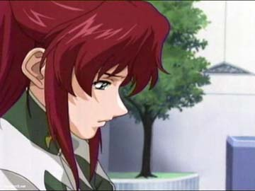
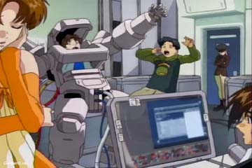
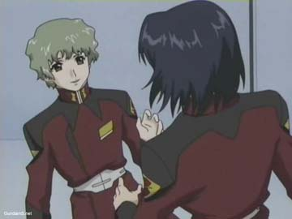

| A young coordinator who was on the Helipolis satellite when it was attacked by ZAFT forces who were attempting to steal the five Gundams built there. Due to a string of bad luck he becomes the pilot of the remaining Gundam called Strike in the upcoming battles. He is also the only coordinator onboard a ship full of Naturals, which makes people suspicious (Nataru) and hated by those who have decided to use him as a puppet to their own ends (Frey Alester). The worse thing of all is that his opponents include his most trusted friend Athrun Zala. Rumor has it that in certain bad situation, his fighting skills improve and he becomes a killing machine. Though he still considers Athrun a friend, after watching Tolle get killed brutally by Athrun, he tries to kill him in a vicious encounter and ends up badly injured both mentally and physically, and oddly enough in Lacus Clyne's mansion. He also has a mechanical bird named Tori, which was made by Athrun in their younger days. After hearing about the upcoming operation spitbreak, Kira along with assistance from Lacus, gains control of a new gundam called the Freedom Gundam. He arrives in Alaska just in time to help with the evacuation of both forces when Alaska is destroyed by the Earth Alliance. Kira and the others head to Orb where Cagali is waiting as well as the somewhat frightening news that Athrun is alive and well. When the Earth Alliance declares war against Orb, Kira first engages the three new EA Gundams and though he has a difficult time, with the unexpected help of Athrun and his Justice Gundam, he is able to drive them off for now. Both he and Athrun are reunited in Orb and later talk about the recent events along with Cagali. He then participates in the evacuation and in the aftermath of Uzumi's death, he finds out about his true relation to Cagali. Kira accompanies Athrun on his journey back to PLANT and immediately provides cover when Athrun, Lacus, and other ZAFT officials try to make a run in the new ZAFT warship being chased by hordes of mobile suits sent by Athrun's father. He then finds out that Barfelt is alive and has a sad reunion with Lacus who tells him of her father's death |
| Pilot of the stolen Aegis Gundam. In his younger days, he and Kira were very close yet now with Kira on the side of the naturals, it is creating a problem especially with the fact that Naturals murdered his mother in the Bloody Valentine incident and his father is one of the leading war hawks on the ZAFT council. It gets even more complicated when he hears from his fiancé of a politically arranged marriage, Lacus Clyne, admit to him that she likes Kira Yamato. After watching Kira decimate ZAFT forces including killing Nichol of Blitz Gundam, Athrun finally goes all out in an attempt to kill Strike's pilot and survives to end up back at Orb with Cagali who gets into another harsh conversation with him about the war, which leaves them both saddened, introspective, and Athrun starting to doubt why they're fighting at all. He receives a gift from her before returning back to his own forces where he is reassigned to a new mobile suit and a new elite squadron for special forces operations attached to his father's command and his first order of business after hearing of the failure of Operation Spitbreak, ironically, is to hunt down both.. |
| A daughter of one of the representatives of the neutral nation of Orb (ironically the one who allowed the construction of the Gundams on Helipolis), she journeys all over the place and after seeing her rescuer on Helipolis alive and in big time trouble, she joins Archangel to help him. She soon becomes the pilot of one of the two Skygrapsers and has a very mean temper but she respects and truly cares for Kira. Though somewhat understanding of why coordinators fight, she considers them all monsters until a fateful encounter with Athrun Zala starts to put doubt into her mind. After hearing of the battle between Strike and Aegis, she immediately rushes to the scene to find Athrun alive and Kira missing, presumed dead. They then have a harsh conversation about the morality of war, which leaves them more saddened as well as introspective. While releasing Athrun, she gives him a small necklace, telling him that she doesn't want to lose any more people who are dear to her. She is very glad that Kira survived when she receives the report from Archangel and brings him the somewhat good news about Athrun. After watching the battle and the unexpected arrival of Athrun in his Justice Gundam, she is the first to head out to meet them both and ironically is the only one with the guts to talk to them since the others are scared of talking to them both now. She is forced to escape back to space while her father sacrifices himself to prevent the Earth Alliance from getting its hands on the port and the mobile suit research facilities. As she escapes, her father tells her that Kira is her brother. She then reveals the news to both Kira and Athrun. She seems to have taken a liking to Athrun and it shows when Athrun returns from his failed reunion with his father. |
| Supervisor of the Gundam transfer during the Helipolis attack, she meets the future pilot of Strike and becomes the captain of the Archangel after the previous captain is killed in the raid. Though somewhat commanding and harsh, she is a kind woman who treats Kira with much more respect than the rest of the crew, partially due to the fact that he saved her life. Murrue has already lost several close friends in this war and in a firefight above Earth's atmosphere; she loses one of her mentors and dear friend, Admiral Harveton. She also seems to have taken an interest in Muu La Fraga. As a result of her actions, Murrue along with the rest of the Archangel is confined in Alaska while Frey, Natarle, and Muu are all reassigned. During the fight for Alaska, she commands the Archangel through her toughest battle. After Kira bails them out, Murrue orders the ship to head to Orb and commands her in the defense and evacuation of Orb. |
| Ace pilot of the Mobius Zero, known as the Falcon of Endyminon to his peers, and the survivor of a battle against ZAFT ace Raww le Klueze. He is well known and his behavior helps relax the other members of the crew, especially the captain. On Earth, he switches to piloting one of the two Skygrapsers. He along with the captain are much more kind to Kira than the rest of the crew. Since he is one of the Earth Alliance's best pilots, he is reassigned. Fortunately, his reassignment is delayed when Operation Spitbreak starts and he assists Archangel as always with the Skygrasper (launcher Strike). After arriving in Orb, he finds that he will be the replacement pilot of Strike after Kagari is rejected and goes through training under Kira in order to master the Gundam. He first uses the Gundam in Orb and does quite well actually. As for his personal life, he seems to have taken a liking to Murrue Ramius. |
|  | The rich daughter of an Alliance government official, she goes to the same school that Kira goes to on Helipolis. She is beautiful enough to turn heads, including Kira's. Unfortunately, she has a deep hatred of coordinators and after seeing her father killed in a battle with ZAFT, she swears revenge against all coordinators. She breaks off her relationship with her boyfriend Sai Argyle and seduces Kira into a virtual killing machine. She also has attempted to kill Diakka in order to redeem herself for her actions to her friends (excluding Kira). Since her views coincide with that of the EA leaders and because her father was an important member of the Earth Alliance government, she is reassigned along with Nataru and Muu La Fraga. She then gets captured by Kruze during the opening rounds of Operation SpitBreak. She was last seen with a ZAFT uniform and it seems that Kruze did a very good job in turning her into one of his minions.. |
|  | A classmate and close friend of Kira in college, she serves as one of the operators on the ship after Helipolis is destroyed. She is one of the few to wonder what the hell is going on with Kira and Frey. She also has a boyfriend named Tolle Kolleg but unfortunately, he loses his life at Athrun's hands and Miriallia is left to mourn as well as nearly taking her anger out on the captured Diakka when he made rude comments on her and Tolle. Fortunately, Diakka apologized in a subtle way for his big mouth. First Person to the Left |
| Pilot of the Buster Gundam and lackey of Issac Joule. Easy to get angry with and he will kill anyone who does it to him or Issac. During the Orb campaign, he gets captured by a very angry Archangel crew and subsequently makes things worse by angering Mirililla about Tolle's death though he does calm her down by saying that he wasn't the one who killed him in Orb. . He surprisingly decides to assist Archangel though it is somewhat interesting. |
|  | Pilot of the Blitz Gundam. He is a more peaceful person than Issac and Diakka and considers Athrun to be a big brother to him. He is also a talented pianist and has a father who works on the council and who is a supporter of Athrun's father. He is KIA by Strike Gundam in Sword Strike Mode. |
| An ace pilot in the ZAFT forces, he is Athrun's direct superior and is lead commander in the battles against Archangel as well as being very ruthless. He wears a mask, which hides his true face and has to take medicine for problems within his body. He also seems to hate Athrun's father who ironically places him in charge of the true Operation Spitbreak of which he leads the opening assault. His preferred mobile suit is the GCUE, though he has been known to pilot a DINN painted in the commander type gray colors. During the Operation, he activates Alaska's self destruct sequence, kidnaps Frey, and escapes while Issac and the rest of the ZAFT forces are nearly left to their doom. He then observes the recent battles along with Issac before heading back out to space with a few souvenirs for Chairman Zala. Before leaving to engage Archangel fleet with his hew GuAIZ mobile suit, he gives Frey a disk, which he said was the key to ending the whole thing. |
| One of the surviving officers onboard the Archangel, she is an expert soldier who's decisions have often spared the crew from destruction though this had made her cold and suspicious of coordinators including Kira. Since, she is an excellent soldier and follows the party line more closely, she is reassigned. After hearing about Archangel's actions and the fact that it has two new fearsomely powerful Gundams, she is handed another Archangel class ship, the Dominion, and ordered to use the three new EA Gundams to hunt down the renegade warship. Her skills come immediately to the fore when she manages to heavily damage Archangel. |
| He is hotheaded and dislikes Athrun for stealing his status in the society of the PLANT. He becomes even more insane when during a battle with Kira, he receives a head scar on his face. This has also created a vendetta between him and Strike's pilot. Ironically out of the four ZAFT pilots at the beginning, he is the only one who had made it out alive after the Orb campaign, and he has to suffer the humiliation of having Athrun and not him killing Strike. The death of Nichol as well as the capture of Diakka may have forced him to consider his stance about the war and wise up a little towards Athrun. When hearing of the true target, Issac praises Athrun's father and does a commendable job but unfortunately, he is lead into a trap by his commander and barely saved by the arrival of the Freedom Gundam, although his Gundam lost its legs when he tried to attack Kira. He participates in the assault on Panama and though it was an easy campaign, he is somewhat disgusted by his own side's tactics of executing surrendering soldiers. He is stuck with Kruze and Frey on the flight back to plant as well as on the jouney to Mendel. |